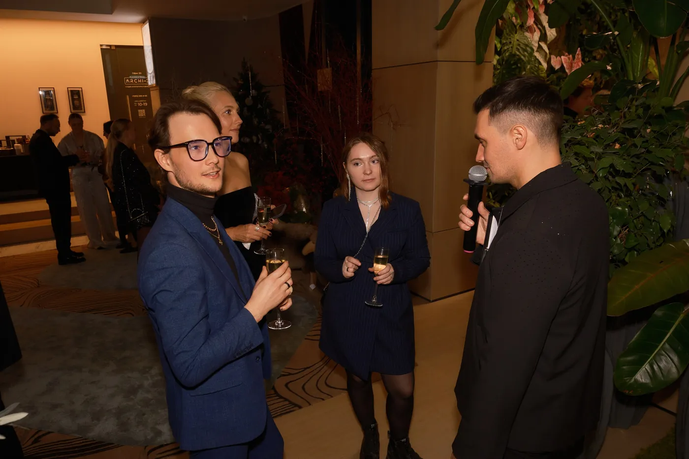
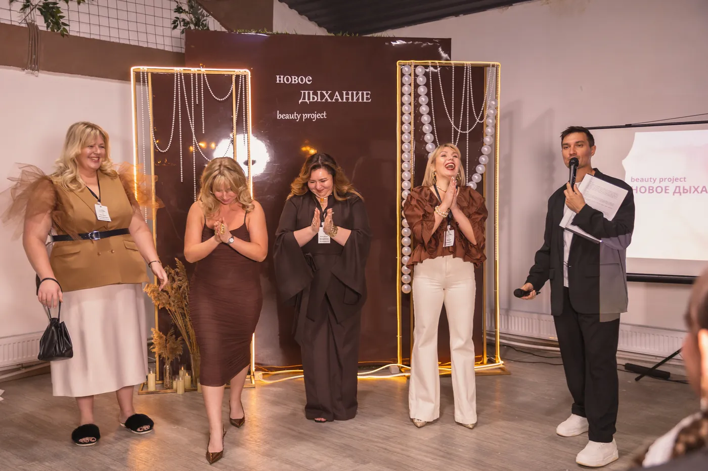

Истории команды
Материал строится вокруг реальных людей, внутренних сюжетов и узнаваемых деталей компании.
Корпоративы
Изучаю информацию о компании и сотрудниках, чтобы программа звучала на языке людей, которые собрались в зале.

Подготовка
Собираю факты о компании, характерные истории команды и детали о сотрудниках. На вечере они становятся основой для юмора, музыкальных эпизодов и импровизации.
Материал строится вокруг реальных людей, внутренних сюжетов и узнаваемых деталей компании.
Подхватываю реакции и разговоры так, чтобы гости становились соавторами происходящего.
Вокал, гитара и клавиши помогают менять ритм вечера и создавать персональные моменты.
Организатор заранее понимает ход программы и может спокойно заниматься другими задачами события.
Вечер изнутри
Не навязываю готовый сценарий поверх людей. Работаю внутри атмосферы команды: слышу зал, сохраняю общий ритм и вовремя соединяю подготовленный материал с тем, что происходит прямо сейчас.



Прямой контакт
Напишите дату, город, формат и количество гостей. Я отвечу по занятости и уточню задачи вечера.